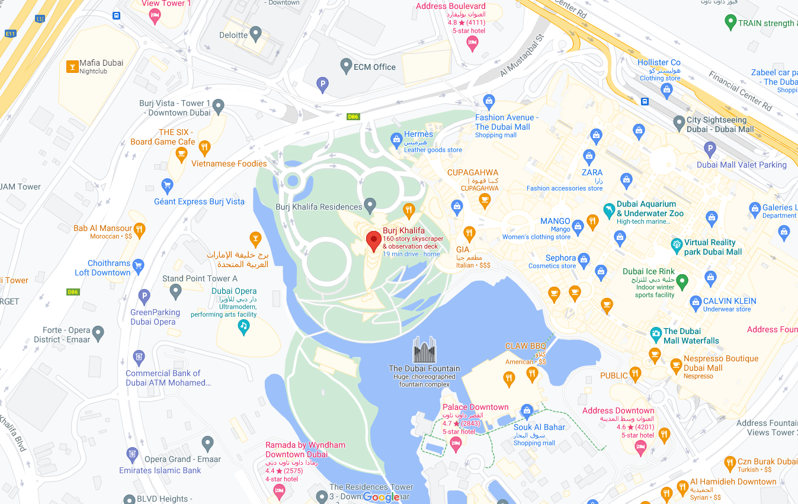
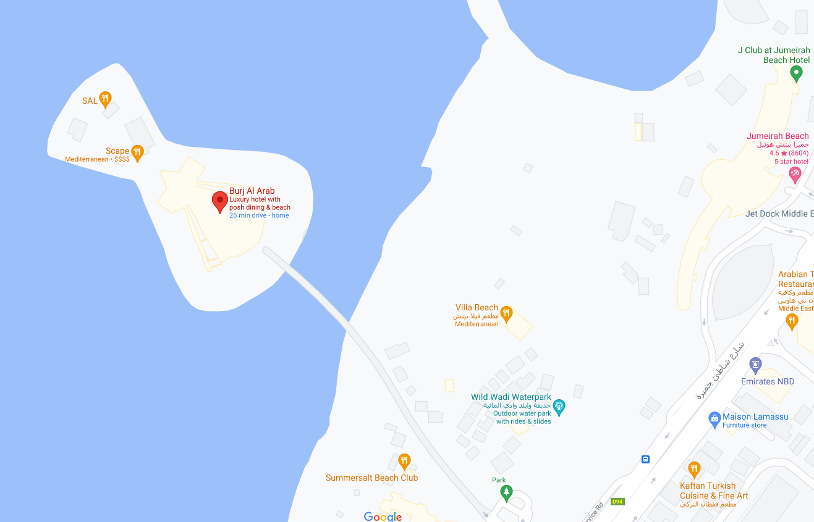
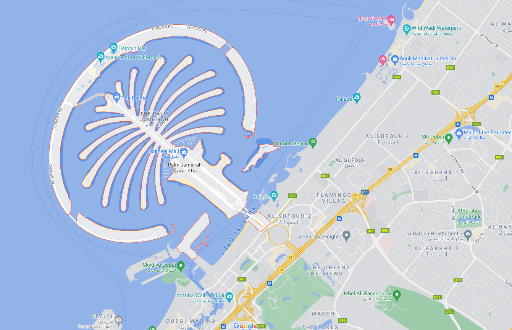
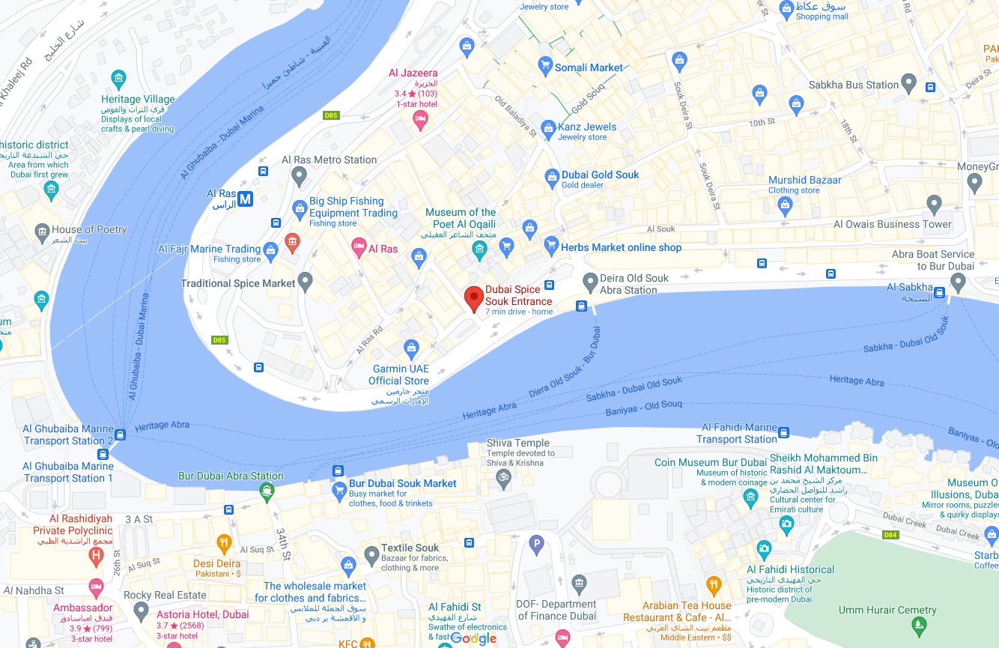

Welcome to Dubai


Burj Khalifa
Burj Al Arab
The Palm

The Burj Khalifa , known as the Burj Dubai prior to its inauguration in 2010, is a skyscraper in Dubai, United Arab Emirates. With a total height of 829.8 m (2,722 ft, just over half a mile) and a roof height (excluding antenna, but including a 244 m spire ) of 828 m (2,717 ft), the Burj Khalifa has been the tallest structure and building in the world since its topping out in 2009 (preceded by Taipei 101).

The Burj Al Arab is a luxury hotel located in the city of Dubai, United Arab Emirates. Managed by Jumeirah hotel group, it is one of the tallest hotels in the world, although 39% of its total height is made up of non-occupiable space. Burj Al Arab stands on an artificial island 280 m from Jumeirah Beach and is connected to the mainland by a private curving bridge. The shape of the structure is designed to resemble the sail of a ship. It has a helipad near the roof at a height of 210 m above ground.
The Palm Jumeirah is a manmade archipelago in Dubai, in the United Arab Emirates, created using land reclamation by Nakheel which extends into the Persian Gulf. It is part of a larger series of developments called the Palm Islands, including Palm Jebel Ali and Palm Deira, which, when completed, will together increase Dubai's shoreline by a total of 520 kilometres. It has an estimated population of 10,500 as of 2016. It is located on the Jumeirah coastal area of the emirate of Dubai, in the United Arab Emirates. The construction was done as a joint venture by two Dutch specialist companies, Van Oord and Boskalis. The same companies also created The World. The recently opened destinations The Pointe, Club Vista Mare and Nakheel Mall are the latest additions to The Palm Jumeirah.
Dubai Spice Souk or the Old Souk is a traditional market in Dubai, United Arab Emirates. The Spice Souk is located in eastern Dubai, in Deira and is adjacent to the Dubai Gold Souk. The Spice Souk, situated on Baniyas Street, is in the locality of Al Ras. The souk comprises several narrow lanes which are lined with open and closed-roof stores.
